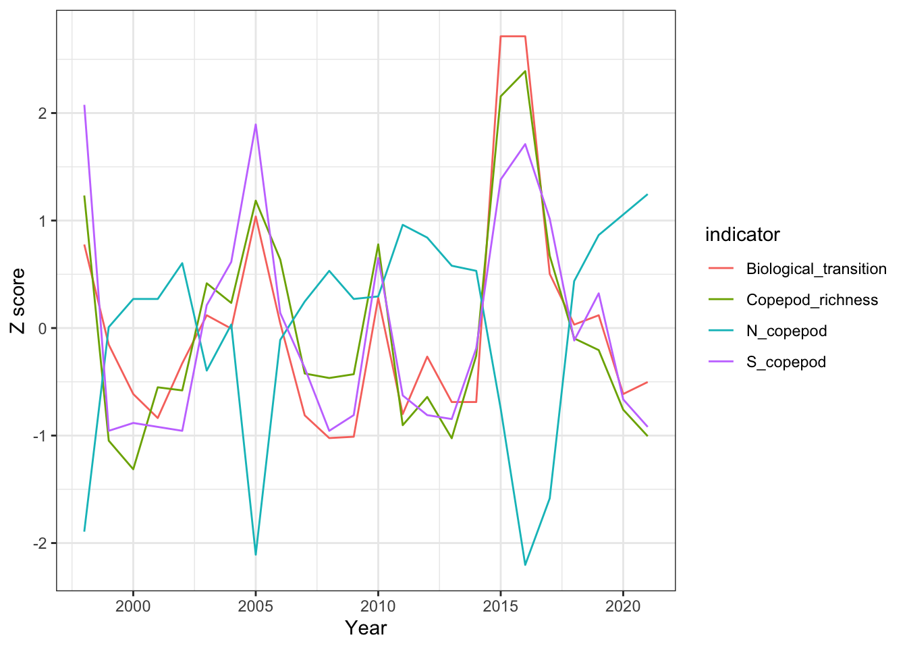

Through this analysis, we used these data to ask whether the stoplight biological indicators undergo regime or “transition” shifts through time.
Methods
Using the stoplight dataset, we developed 2- and 3-state multivariate HMMs with copepod-related biological indicators as our response variables. We then tested whether PDO-related variables affecting transition probablities. In all models, we assumed all responses are Gaussian. To facilitate the visual comparison across response variables, we ran models on both standardized (z-scored) and non-standardized data.
Hypotheses
Copepods and other zooplankton are responsive to oceanographic conditions that alter their physical environment and food sources. We hypothesize that 4 indicators of the copepod community - richness, N biomass, S biomass, and biological transition - will be significantly impacted by PDO transitions. If copepods are sensitive to PDO, we should see shifts in the copepod community on a ~decadal scale. Covariates related to the PDO should strengthen the model if there is a strong link between the PDO and copepods.
cop.dat<-stoplight[9:12,]cop.row<-cop.dat[,1]cop.dat<-cop.dat[,3:26]rownames(cop.dat)<-cop.row#look at the data over timecop.t<-t(cop.dat)rows <-gsub("X","", rownames(cop.t))row.names(cop.t)<-rowscop.df<-data.frame(cop.t)cop.df$Year<-row.names(cop.df)# to make this tidyr happycop.df.long = cop.df %>%pivot_longer(-Year, names_to="indicator", values_to ="value") %>%mutate(Year=as.numeric(Year))cop.df.long %>%group_by(indicator) %>%mutate(value=scale(value)) %>%ggplot(aes(x=Year,y=value,color=indicator)) +geom_line() +theme_bw() +labs(y="Z score")

Code
library(janitor)
Attaching package: 'janitor'
The following objects are masked from 'package:stats':
chisq.test, fisher.test
Warning: The `x` argument of `as_tibble.matrix()` must have unique column names if
`.name_repair` is omitted as of tibble 2.0.0.
ℹ Using compatibility `.name_repair`.
Code
covar$Year <-1998:2021# to make this tidyr happycv.df = covar %>%pivot_longer(-Year, names_to="variable", values_to="value") %>%# z scoresgroup_by(variable) %>%mutate(z_score =scale(value)) %>%group_by(Year) %>%filter(variable %in%c("N_copepod","S_copepod","Copepod_richness","Biological_transition"))# save this as the non z score versionbig.df = cv.df %>%select(-z_score) %>%# repivot for data analysis pivot_wider(names_from="variable", values_from="value")# save as z score versionbig.df.z = cv.df %>%select(-value) %>%# repivot for data analysis pivot_wider(names_from="variable", values_from="z_score")
Results
Multivariate HMM - 1-3 states
Here we evaluate the data support for a multivariate HMM 1, 2, or 3 state model.
Code
# loop through a few states and compare AICset.seed(123)AIC_tbl =data.frame(nstate=0, AIC=0)fit_list =NULLfor (i in1:3){mod<-depmix(list(Copepod_richness ~1, N_copepod ~1, S_copepod ~1,Biological_transition ~1),nstates = i,family=list(gaussian(), gaussian(),gaussian(),gaussian()),data=big.df)fitmod <-fit(mod)fit_list[[i]] = fitmod# Transition matrix# summary(fitmod, which = "transition")# AICAIC_tbl[i,"nstate"] = iAIC_tbl[i,"AIC"] =AIC(fitmod)}
converged at iteration 1 with logLik: -214.936
converged at iteration 9 with logLik: -160.1462
converged at iteration 5 with logLik: -127.0371
Code
# do the same but with z scoresset.seed(123)AIC_tbl_z =data.frame(nstate=0, AIC=0)fit_list_z =NULLfor (i in1:3){mod<-depmix(list(Copepod_richness ~1, N_copepod ~1, S_copepod ~1,Biological_transition ~1),nstates = i,family=list(gaussian(), gaussian(),gaussian(),gaussian()),data=big.df.z)fitmod <-fit(mod)fit_list_z[[i]] = fitmod# Transition matrix# summary(fitmod, which = "transition")# AICAIC_tbl_z[i,"nstate"] = iAIC_tbl_z[i,"AIC"] =AIC(fitmod)}
converged at iteration 1 with logLik: -134.1752
converged at iteration 9 with logLik: -79.38551
converged at iteration 5 with logLik: -46.27637
Code
AIC_tbl
nstate AIC
1 1 445.8719
2 2 358.2925
3 3 318.0742
Code
AIC_tbl_z
nstate AIC
1 1 284.3505
2 2 196.7710
3 3 156.5527
2 states seem like the most reasonable. Though a 3rd state lowers the AIC, adding more states to an HMM usually lowers the AIC. We proceed with a 2 state HMM due to its interpretability (there are 2 states in the PDO fluctuation, our system of interest).
HMM 2-State plots
Code
# compare HMM with raw data and z score data# RAW DATA#most probable statesprstates2 <-apply(posterior(fit_list[[2]]) [,c("S1", "S2")], 1, which.max)
Warning in .local(object, ...): Argument 'type' not specified and will default
to 'viterbi'. This default may change in future releases of depmixS4. Please
see ?posterior for alternative options.
Warning in .local(object, ...): Argument 'type' not specified and will default
to 'viterbi'. This default may change in future releases of depmixS4. Please
see ?posterior for alternative options.
There seems to be 2 state system, where the first state is associated with high copepod richness and S copepod, and low N copepod The second state is associated with low copepod richness and S copepod, and high N copepod. The probability of transitioning from state 1 to state 2 is 0.218. The probability of transitioning from state 2 to state 1 is 0.446.
Our analysis shows that z-scoring the indicator data shows the same state fits as the raw data results, albeit at different scales. Z-scores are only useful for plotting purposes. Transition probabilities are identical. Though z-scoring the data is helpful in visualizing the contrast among states, we proceed with raw data when adding covariates.
Multivariate HMM with covariates
Here we test the data support for including SST and Deep temperature as covariates that affect the transition probabilities of our 2-state HMM model.
Code
#building the 2 state modelset.seed(123)# model selcov.terms<-c("SST","Deep_temperature")# Create a table of indicators as to whethr that predictor is includedmod.ind <-as.matrix(expand.grid(c(FALSE,TRUE),c(FALSE,TRUE)))mod.tab <-data.frame(mod.ind)names(mod.tab) <- cov.terms# Define a column for storing AICmod.tab$AIC <-NAfit_covar_list =NULLfor (i in1:nrow(mod.tab)){ ind_on=as.matrix(mod.tab[i,1:length(cov.terms)])# Set which covariates should be included in formulasif (length(cov.terms[ind_on])==0){ formula =~1 }else{ formula =paste("~",paste(cov.terms[ind_on],collapse="+"),sep="") } mod.2covar <-depmix(list(Copepod_richness ~1, N_copepod ~1, S_copepod ~1,Biological_transition ~1),nstates =2,# Could change this to three. Adding states almost always improves AICsfamily=list(gaussian(), gaussian(),gaussian(),gaussian()),transition =eval(parse(text=formula)),## Affects the probability of transitioningdata=covar) fit_covar_list[[i]]=fit(mod.2covar) mod.tab[i,"AIC"] =AIC((fit_covar_list[[i]]))}
converged at iteration 9 with logLik: -160.1462
converged at iteration 5 with logLik: -157.8728
converged at iteration 8 with logLik: -159.0089
converged at iteration 7 with logLik: -153.9941
[[1]]
Model of type multinomial (mlogit), formula: ~SST
Coefficients:
St1 St2
(Intercept) 0 62.299316
SST 0 -4.599023
Probalities at zero values of the covariates.
8.785182e-28 1
[[2]]
Model of type multinomial (mlogit), formula: ~SST
Coefficients:
St1 St2
(Intercept) 0 5.7093173
SST 0 -0.3275636
Probalities at zero values of the covariates.
0.003303982 0.996696
[[1]]
Model of type multinomial (mlogit), formula: ~Deep_temperature
Coefficients:
St1 St2
(Intercept) 0 -24.24479
Deep_temperature 0 2.78945
Probalities at zero values of the covariates.
1 2.955431e-11
[[2]]
Model of type multinomial (mlogit), formula: ~Deep_temperature
Coefficients:
St1 St2
(Intercept) 0 35.136158
Deep_temperature 0 -4.392846
Probalities at zero values of the covariates.
5.502504e-16 1
Warning in .local(object, ...): Argument 'type' not specified and will default
to 'viterbi'. This default may change in future releases of depmixS4. Please
see ?posterior for alternative options.
Initial state probabilities model
pr1 pr2
1 0
Transition model for state (component) 1
Model of type multinomial (mlogit), formula: ~SST + Deep_temperature
Coefficients:
St1 St2
(Intercept) 0 124.42887
SST 0 -90.16694
Deep_temperature 0 137.30232
Probalities at zero values of the covariates.
9.145973e-55 1
Transition model for state (component) 2
Model of type multinomial (mlogit), formula: ~SST + Deep_temperature
Coefficients:
St1 St2
(Intercept) 0 5.54344693
SST 0 -0.33007969
Deep_temperature 0 0.02560362
Probalities at zero values of the covariates.
0.003897764 0.9961022
Response parameters
Resp 1 : gaussian
Resp 2 : gaussian
Resp 3 : gaussian
Resp 4 : gaussian
Re1.(Intercept) Re1.sd Re2.(Intercept) Re2.sd Re3.(Intercept) Re3.sd
St1 4.056 2.211 -0.371 0.391 0.327 0.187
St2 -1.329 1.067 0.281 0.142 -0.145 0.102
Re4.(Intercept) Re4.sd
St1 219.667 81.944
St2 102.467 27.677
Code
pred_covar <-data.frame("year"=seq(min(covar$Year), max(covar$Year)), "fit"= mu_covar[prstates_covar])ggplot(covar) +geom_point(data=cv.df,aes(x=Year,y=z_score,color=variable),size=2,alpha=0.7) +geom_line(data=pred2, aes(year, scale(fit),color="w/o cov"))+geom_line(data=pred_covar, aes(year, scale(fit),color="w cov")) +ggtitle("2 state model - with vs without covariates") +ylab("Z score") +xlab("Year") +theme_bw()
Code
## Fits almost the same with and without covariates
Adding covariates only slightly changes the fits of states, but since the AIC is decreased by < 10 it may not be worth including the covariates in the final model. The transition from state 1 to 2 only differ by 1 year around 1998 and 2006.
Discussion
Our best model was a 2 state model using N copepod, S copepod, copepod richness, and biological transition as indicators with SST and deep temperature as covariates. The 2nd state of high copepod richness (warm PDO), high S copepod biomass (winter dominant), low N copepod biomass (summer dominant), and late biological transition (winter>summer) confirms what we know about copepod ecology in the CA Current. The transition matrix suggests that the systems tends to remain in the 1st state on average. This 1st state tends to be associated with the cool PDO.
Temperature covariates seem to be minmally important in explaining the state transitions. However, if covariates are included, warmer temperatures are generally associated with increased copepod diversity.
Team contributions
All team members contributed to experimental design and planning. ETS did the first draft of the 2- and 3- state HMMs and provided feedback and editing of the other team members’ work. Liz wrote the initial code to include the effect of covariates on the transition probabilities. Terrance improved and cleaned up code, and created the for loops for model selection with z scores. All members edited and contributed to writing the Methods, Results and Discussions sections.
Source Code
---title: "Team 4 - Lab 4"subtitle: "Hidden Markov Models"author: "Liz Elmstrom, Terrance Wang, Emma Timmins-Schiffman"date: May 9, 2023output: html_document: code-folding: true toc: true toc_float: true---```{r setup, include = FALSE}options(dplyr.summarise.inform = FALSE)```# General QuestionsAs part of the California Current Integrated Ecosystem Report, NOAAscientists do annual updates of [stoplight charts for ecosystemindicators](https://www.fisheries.noaa.gov/west-coast/science-data/ocean-conditions-indicators-trends).Through this analysis, we used these data to ask whether the stoplight biological indicators undergo regime or "transition" shifts through time. # MethodsUsing the stoplight dataset, we developed 2- and 3-state multivariate HMMs with copepod-related biological indicators as our response variables. We then tested whether PDO-related variables affecting transition probablities. In all models, we assumed all responses are Gaussian. To facilitate the visual comparison across response variables, we ran models on both standardized (z-scored) and non-standardized data. ## HypothesesCopepods and other zooplankton are responsive to oceanographic conditions that alter their physical environment and food sources. We hypothesize that 4 indicators of the copepod community - richness, N biomass, S biomass, and biological transition - will be significantly impacted by PDO transitions. If copepods are sensitive to PDO, we should see shifts in the copepod community on a ~decadal scale. Covariates related to the PDO should strengthen the model if there is a strong link between the PDO and copepods.# Data## Load the data```{r load_data}library(depmixS4)library(ggplot2)library(tidyverse)stoplight <- read.csv(here::here("Lab-4", "stoplight.csv"))```## Wrangle the data```{r wrangle_data}cop.dat<-stoplight[9:12,]cop.row<-cop.dat[,1]cop.dat<-cop.dat[,3:26]rownames(cop.dat)<-cop.row#look at the data over timecop.t<-t(cop.dat)rows <- gsub("X","", rownames(cop.t))row.names(cop.t)<-rowscop.df<-data.frame(cop.t)cop.df$Year<-row.names(cop.df)# to make this tidyr happycop.df.long = cop.df %>% pivot_longer(-Year, names_to="indicator", values_to = "value") %>% mutate(Year=as.numeric(Year))cop.df.long %>% group_by(indicator) %>% mutate(value=scale(value)) %>% ggplot(aes(x=Year,y=value,color=indicator)) + geom_line() + theme_bw() + labs(y="Z score")``````{r covariates}library(janitor)covar <- stoplight %>% filter(Ecosystem.Indicators %in% c('Copepod_richness','N_copepod','S_copepod',"Deep_temperature","SST", "PDO_DecMarch","Biological_transition"))%>% select(!Type)%>% t() %>% as_tibble %>% row_to_names(row_number = 1)%>% mutate_if(is.character, as.numeric)covar$Year <- 1998:2021# to make this tidyr happycv.df = covar %>% pivot_longer(-Year, names_to="variable", values_to="value") %>% # z scores group_by(variable) %>% mutate(z_score = scale(value)) %>% group_by(Year) %>% filter(variable %in% c("N_copepod","S_copepod","Copepod_richness","Biological_transition"))# save this as the non z score versionbig.df = cv.df %>% select(-z_score) %>% # repivot for data analysis pivot_wider(names_from="variable", values_from="value")# save as z score versionbig.df.z = cv.df %>% select(-value) %>% # repivot for data analysis pivot_wider(names_from="variable", values_from="z_score")```# Results## Multivariate HMM - 1-3 statesHere we evaluate the data support for a multivariate HMM 1, 2, or 3 state model. ```{r}# loop through a few states and compare AICset.seed(123)AIC_tbl =data.frame(nstate=0, AIC=0)fit_list =NULLfor (i in1:3){mod<-depmix(list(Copepod_richness ~1, N_copepod ~1, S_copepod ~1,Biological_transition ~1),nstates = i,family=list(gaussian(), gaussian(),gaussian(),gaussian()),data=big.df)fitmod <-fit(mod)fit_list[[i]] = fitmod# Transition matrix# summary(fitmod, which = "transition")# AICAIC_tbl[i,"nstate"] = iAIC_tbl[i,"AIC"] =AIC(fitmod)}# do the same but with z scoresset.seed(123)AIC_tbl_z =data.frame(nstate=0, AIC=0)fit_list_z =NULLfor (i in1:3){mod<-depmix(list(Copepod_richness ~1, N_copepod ~1, S_copepod ~1,Biological_transition ~1),nstates = i,family=list(gaussian(), gaussian(),gaussian(),gaussian()),data=big.df.z)fitmod <-fit(mod)fit_list_z[[i]] = fitmod# Transition matrix# summary(fitmod, which = "transition")# AICAIC_tbl_z[i,"nstate"] = iAIC_tbl_z[i,"AIC"] =AIC(fitmod)}AIC_tblAIC_tbl_z```2 states seem like the most reasonable. Though a 3rd state lowers the AIC, adding more states to an HMM usually lowers the AIC. We proceed with a 2 state HMM due to its interpretability (there are 2 states in the PDO fluctuation, our system of interest).## HMM 2-State plots```{r 2 state plots}# compare HMM with raw data and z score data# RAW DATA#most probable statesprstates2 <- apply(posterior(fit_list[[2]]) [,c("S1", "S2")], 1, which.max)# plot(prstates2, type='b', xlab='Time', ylab='State')#estimated data/fitsmu2 <- summary(fit_list[[2]])[,1]pred2 <- data.frame("year"=seq(min(big.df$Year), max(big.df$Year)), "fit" = mu2[prstates2])# Z SCORE DATA#most probable statesprstates2_z <- apply(posterior(fit_list_z[[2]]) [,c("S1", "S2")], 1, which.max)# plot(prstates2, type='b', xlab='Time', ylab='State')#estimated data/fitsmu2_z <- summary(fit_list_z[[2]])[,1]pred2_z <- data.frame("year"=seq(min(big.df$Year), max(big.df$Year)), "fit" = mu2_z[prstates2_z])# Raw dataggplot() + geom_point(data=cv.df,aes(x=Year,y=value,color=variable)) + geom_line(data=pred2, aes(year, fit)) + ggtitle("Copepods - raw data and predictions") + ylab("Indicator Value") + xlab("Year") + theme_bw()# Z scoreggplot() + geom_point(data=cv.df,aes(x=Year,y=z_score,color=variable),shape=4,size=3) + geom_line(data=pred2_z, aes(year, fit), linetype = "dashed") + ggtitle("Copepods - z-score data and predictions") + ylab("Indicator Value") + xlab("Year") + theme_bw()# Transition Tablessummary(fit_list[[2]], which = "transition")summary(fit_list_z[[2]], which = "transition")```There seems to be 2 state system, where the first state is associated with high copepod richness and S copepod, and low N copepod The second state is associated with low copepod richness and S copepod, and high N copepod. The probability of transitioning from state 1 to state 2 is 0.218. The probability of transitioning from state 2 to state 1 is 0.446.Our analysis shows that z-scoring the indicator data shows the same state fits as the raw data results, albeit at different scales. Z-scores are only useful for plotting purposes. Transition probabilities are identical. Though z-scoring the data is helpful in visualizing the contrast among states, we proceed with raw data when adding covariates. ## Multivariate HMM with covariatesHere we test the data support for including SST and Deep temperature as covariates that *affect the transition probabilities* of our 2-state HMM model. ```{r covar}#building the 2 state modelset.seed(123)# model selcov.terms<-c("SST","Deep_temperature")# Create a table of indicators as to whethr that predictor is includedmod.ind <- as.matrix(expand.grid(c(FALSE,TRUE),c(FALSE,TRUE)))mod.tab <- data.frame(mod.ind)names(mod.tab) <- cov.terms# Define a column for storing AICmod.tab$AIC <- NAfit_covar_list = NULLfor (i in 1:nrow(mod.tab)){ ind_on=as.matrix(mod.tab[i,1:length(cov.terms)]) # Set which covariates should be included in formulas if (length(cov.terms[ind_on])==0){ formula = ~1 }else{ formula = paste("~",paste(cov.terms[ind_on],collapse="+"),sep="") } mod.2covar <-depmix(list(Copepod_richness ~ 1, N_copepod ~ 1, S_copepod ~ 1,Biological_transition ~ 1), nstates = 2,# Could change this to three. Adding states almost always improves AICs family=list(gaussian(), gaussian(),gaussian(),gaussian()), transition = eval(parse(text=formula)),## Affects the probability of transitioning data=covar) fit_covar_list[[i]]= fit(mod.2covar) mod.tab[i,"AIC"] = AIC((fit_covar_list[[i]]))}mod.tab```Inclusion of both SST and Deep Temp as covariates for the transition matrix seems to improve the 2-state model.## Effect of covariates```{r}convert_probs =function(fit, coef_value =0) {# extract coefficients p1 <- fit@transition[[1]]@parameters$coefficients p2 <- fit@transition[[2]]@parameters$coefficients# assemble transition matrix in mlogit space m <-matrix(0, 2, 2) m[1,] <- p1[1,] + p1[2,] * coef_value m[2,] <- p2[1,] + p2[2,] * coef_value# exponentiate m <-exp(m)# normalize m[1,] <- m[1,] /sum(m[1,]) m[2,] <- m[2,] /sum(m[2,])return(m)}```Checking out the covariate effects separately.```{r}SST_mod <- fit_covar_list[[2]]#summary(SST_mod)SST_mod@transitionconvert_probs(SST_mod, coef_value =0)convert_probs(SST_mod, coef_value =1)```SST has a negative effect on the transition from state 2 to state 1. The transition probability from state 1 to state 2 stays roughly the same. ```{r}DT_mod <- fit_covar_list[[3]]#summary(DT_mod)DT_mod@transitionconvert_probs(DT_mod, coef_value =0)convert_probs(DT_mod, coef_value =1)```Deep temperature has a positive effect on the transition probabilites. ## Inspecting the best model ```{r covariates plot}summary(fit_covar_list[[4]])#most probable statesprstates_covar <- apply(posterior(fit_covar_list[[4]]) [,c("S1", "S2")], 1, which.max)plot(prstates_covar, type='b', xlab='Time', ylab='State')#estimated datamu_covar <- summary(fit_covar_list[[4]])[,1]pred_covar <- data.frame("year"=seq(min(covar$Year), max(covar$Year)), "fit" = mu_covar[prstates_covar])ggplot(covar) + geom_point(data=cv.df,aes(x=Year,y=z_score,color=variable),size=2,alpha=0.7) + geom_line(data=pred2, aes(year, scale(fit),color="w/o cov"))+ geom_line(data=pred_covar, aes(year, scale(fit),color="w cov")) + ggtitle("2 state model - with vs without covariates") + ylab("Z score") + xlab("Year") + theme_bw()## Fits almost the same with and without covariates```Adding covariates only slightly changes the fits of states, but since the AIC is decreased by < 10 it may not be worth including the covariates in the final model. The transition from state 1 to 2 only differ by 1 year around 1998 and 2006. # DiscussionOur best model was a 2 state model using N copepod, S copepod, copepod richness, and biological transition as indicators with SST and deep temperature as covariates. The 2nd state of high copepod richness (warm PDO), high S copepod biomass (winter dominant), low N copepod biomass (summer dominant), and late biological transition (winter>summer) confirms what we know about copepod ecology in the CA Current. The transition matrix suggests that the systems tends to remain in the 1st state on average. This 1st state tends to be associated with the cool PDO. Temperature covariates seem to be minmally important in explaining the state transitions. However, if covariates are included, warmer temperatures are generally associated with increased copepod diversity. # Team contributionsAll team members contributed to experimental design and planning. ETS did the first draft of the 2- and 3- state HMMs and provided feedback and editing of the other team members' work. Liz wrote the initial code to include the effect of covariates on the transition probabilities. Terrance improved and cleaned up code, and created the for loops for model selection with z scores. All members edited and contributed to writing the Methods, Results and Discussions sections.